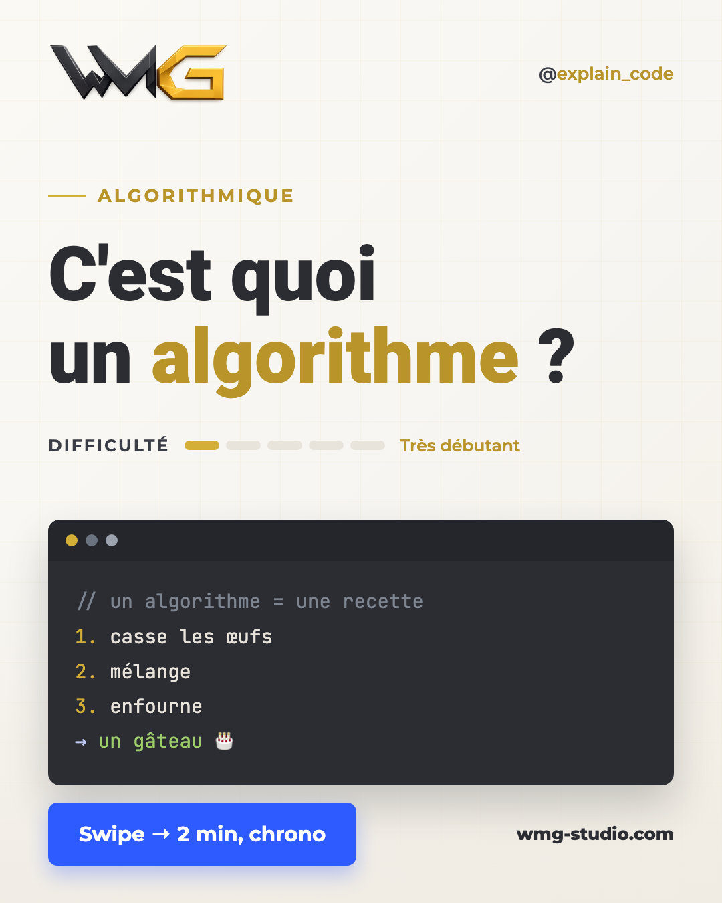
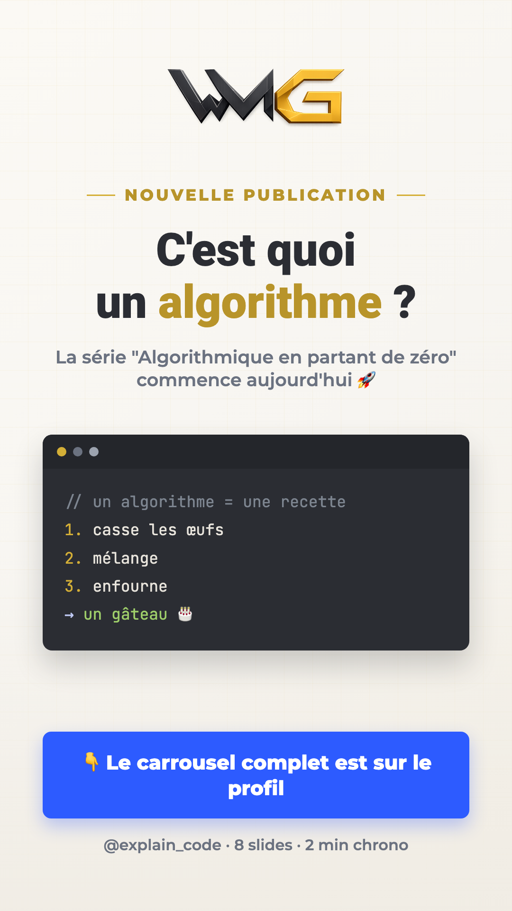

Ce qu'on va construire ensemble
Avant de cliquer où que ce soit, prenons 15 minutes pour comprendre la machine qu'on va monter. À la fin de ce module, tu sauras expliquer ton futur système à un ami — et c'est le meilleur signe que tu es prêt.
0.1Le problème qu'on règle
Tout le monde te dit qu'il faut « être présent sur Instagram ». C'est vrai : 68 % des dirigeants de petites entreprises ont gagné au moins un client grâce aux réseaux sociaux cette année. Mais personne ne te dit comment tenir le rythme : créer un visuel propre, écrire un texte, publier, recommencer tous les 3 jours… pendant des années.
Résultat : la plupart des comptes professionnels publient trois semaines, puis s'arrêtent. Le problème n'est pas la motivation, c'est la répétition. Et la répétition, c'est exactement ce que les machines font mieux que nous.
0.2Le schéma de l'usine (à connaître par cœur)
Voici ton futur système. Trois employés, un chef : toi.
0.3Les 4 comptes qu'on va créer — tous gratuits
Tu pars peut-être de zéro : c'est parfait, la formation crée tout avec toi, depuis la page d'inscription. Voici tes 4 futurs comptes et leur rôle :
| Compte | Son rôle dans l'usine | Prix |
|---|---|---|
| Instagram (professionnel) | Là où ton contenu est publié | 0 € |
| Facebook / Meta | La « mairie » : elle délivre les autorisations officielles pour publier automatiquement | 0 € |
| GitHub | Le bâtiment de l'usine : héberge tes 3 employés invisibles | 0 € |
| Une adresse email dédiée | La boîte aux lettres unique de tout le projet | 0 € |
0.4Ce qu'il te faut avant de commencer
0.5Télécharger ton kit de l'usine
Ton achat comprend le kit complet : les modèles de slides, le script du facteur, les fichiers des robots — tout est prêt, tu n'auras que quelques lignes à personnaliser (on le fera ensemble au Module 2).
kit-usine-wmg.zip arrive dans ton dossier Téléchargements. Double-clique dessus : un dossier normal apparaît à côté (c'est ça, « dézipper »).0.6À quoi ressemblera le résultat
Voici ce que produit l'usine qu'on va construire — un vrai carrousel et sa story d'annonce, générés et publiés automatiquement :


- Quels sont les 3 employés invisibles de ton usine, et que fait chacun ? (le dessinateur, le messager, le facteur)
- Est-ce que quelque chose peut se publier sans ton accord ? (non — jamais)
- Ton dossier
kit-usine-wmgest-il sur ton Bureau, dézippé ?
Glossaire du module — expliqué comme à un bébé
Usine 🏭 — l'ensemble du système automatique qu'on construit. Tu es le patron, elle travaille.
Compte professionnel Instagram 🪪 — un compte Instagram normal, mais avec la casquette « entreprise » : c'est elle qui donne le droit d'utiliser les outils d'automatisation officiels.
API 🍽️ — la porte d'entrée officielle par laquelle les programmes parlent à Instagram. Comme un serveur au restaurant : tu passes commande, il transmet en cuisine, le plat arrive. (On en reparle au Module 3.)
GitHub 🏢 — un site gratuit qui héberge des fichiers et fait tourner des robots à heure fixe. Notre bâtiment d'usine.
Kit 🧰 — le dossier fourni avec la formation : tous les fichiers prêts, tu personnalises, tu ne construis pas de zéro.